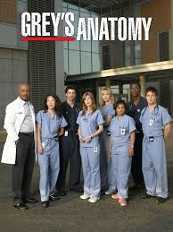
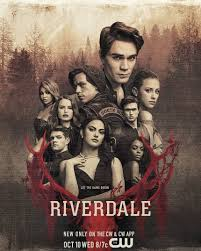

Gossip Girl
O colegial acabou para os privilegiados ex-estudantes de uma escola preparatória exclusiva do Upper East Side de Manhattan, mas a "Gossip Girl" ainda compartilha mensagens de texto sobre escândalos e corações partidos. Enquanto os formandos embarcam rumo ao futuro, com alguns entrando para a faculdade e outros se concentrando nas carreiras em ascensão, a "Gossip Girl" continua a colocar lenha na fogueira e a alimentar qualquer escândalo em potencial. Ainda assim, sua identidade permanece um mistério. Dos produtores executivos Josh Schwartz, Stephanie Savage, Leslie Morgenstein, Bob Levy e Joshua Safran.
Data da postagem: 17/03/2025 as 12:02h

Diários de um vampiro
Alguns meses depois que seus pais são mortos em um trágico acidente de carro, Elena Gilbert e seu irmão Jeremy tentam aplacar sua dor. Para Elena, que sempre foi popular e envolvida com a escola e amigos, é uma luta esconder sua tristeza do mundo. Ela se vê atraída por um novo estudante bonitão e misterioso, Stefan, sem saber que o jovem é um vampiro centenário fazendo o melhor para viver em paz entre os humanos. Seu irmão Damon, porém, é o típico estereótipo de vampiro, incluindo a violência e a brutalidade. Os irmãos travam uma guerra pelas almas de Elena e de todos na pequena cidade do estado da Virginia. Baseado na série de livros de by L.J. Smith.
Data da postagem: 16/03/2023 as 13:40h

Grey's Anatomy
A série médica de enorme sucesso foca em um grupo de jovens médicos do Hospital Grace Mercy West, de Seattle, que começaram a carreira na própria instituição como residentes. Um dos jovens médicos que dá nome ao show, Meredith Grey, é filha de um famoso cirurgião. Meredith luta para manter as relações com seus colegas, especialmente o chefe do centro cirúrgico, Richard Webber, devido ao relacionamento que já existia entre os dois -- Webber teve um caso com a mãe de Meredith na época em que ela era jovem.
Data da postagem: 17/03/2025 as 12:02h

Riverdale
Riverdale é um drama adolescente que explora os mistérios e as complexidades da vida de Archie Andrews e seus amigos (Betty, Veronica, Jughead) na cidade aparentemente tranquila de Riverdale, começando com o misterioso assassinato de Jason Blossom, e evoluindo para tramas cada vez mais sobrenaturais, envolvendo segredos sombrios, crimes, cultos e até dimensões paralelas, enquanto os personagens crescem e lidam com suas identidades, amores e dilemas morais, tudo baseado nos personagens dos quadrinhos da Archie Comics, mas com um tom mais sombrio e adulto.
Data da postagem: 17/03/2025 as 12:43h